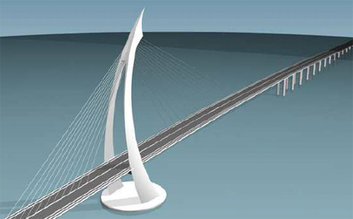
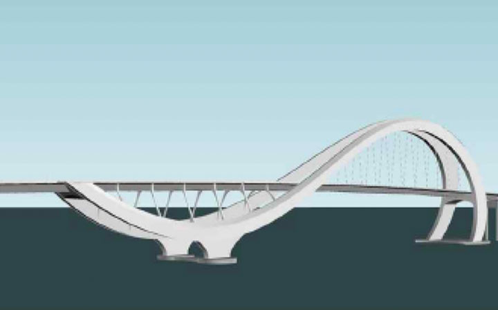

배경 / 원고 회사는 교량 프로젝트 수행 과정에서 사장교와 아치교 디자인이 포함된 3D 설계도안을 창작하고 저작권을 등록하였다. 이후 해당 도안을 작성했던 직원이 피고 회사로 이직하였고, 피고는 교량 공사 입찰 과정에서 원고 도안과 유사한 경관설계도안을 제출하였다. 이에 원고는 해당 설계도안이 자신의 도안에 의거해 작성된 것으로 저작권을 침해했다며 침해금지와 손해배상을 청구하였다.
결론 / 법원은 원고의 교량 도안이 창작성이 있는 건축저작물이며 업무상저작물로서 저작권이 원고에게 귀속된다고 보았다. 또한 피고 설계도안이 원고 도안과 창작적 표현 부분에서 실질적으로 유사하고 의거관계도 인정된다고 판단하여 저작권 침해를 인정하였다.
01 사건의 개요
경관계획, 설계 등의 사업을 영위하는 원고는 2012년 영광해제
프로젝트에 참여해 이 사건 사장교1 도안을 작성했고,
2013년 오만 마시라 프로젝트에 참여해 이 사건 아치교2
도안을 작성했다(이하 “이 사건 도안”으로 총칭함). 원고 회사에서
이 사건 각 도안 작성 업무를 담당했던 A는 2020. 5. 29. 원고를
퇴사한 뒤 원고의 경쟁업체인 피고 회사에 입사하였다. 피고는
광양만권경제자유구역청장이 공고한 경도지구진입도로(연륙교)
개설공사 경쟁입찰에 참가한 남양건설 컨소시엄의 구성원으로서
사장교와 아치교가 결합되어 있는 경관설계도안(이하 “이 사건
설계도안”)을 작성하였고, 그 작성 과정을 A가 주도하였다. 남양건설
컨소시엄은 이 사건 설계도안을 토대로 입찰에 참가해 설계 적격자로
선정된 뒤 2021. 6. 28. 위 발주처와 공사계약을 체결했다.
원고는 이 사건 설계도안이 이 사건 도안에 관한 저작권을
침해하였다고 주장하며 피고와 남양건설을 상대로 저작권침해금지
가처분을 신청했지만, 법원은 2021. 8. 6. 피보전권리 및 보전의
필요성에 관해 만족적 가처분에서 요구되는 고도의 소명이
부족하다는 이유로 원고의 가처분신청을 기각하였다.3
원고는 2021. 8. 13. 이 사건 각 도안의 3D 모델링 데이터에 관하여
한국저작권위원회에 저작자를 원고로 하는 저작권등록을 마쳤고,
이어 2022. 2. 28. 피고를 상대로 저작권침해정지 등을 구하는
본안의 소를 제기했다. 1심 법원의 촉탁에 따라 한국저작권위원회는
이 사건 도안의 창작성 및 이 사건 도안과 이 사건 설계도안의
실질적 유사성이 각각 인정된다는 취지의 감정결과를 제출하였다.
그러나 1심 법원은 이 사건 각 도안의 창작성이 인정되지 않거나 이
사건 설계도안과의 실질적 유사성이 인정되기 어렵다고 보고 원고의
청구를 기각하였다.4 원고의 불복으로 제기된 항소심에서
법원은 1심과는 달리 피고의 저작권 침해가 인정된다고 판단하고
원고의 손해배상청구 중 일부(6,000만원)를 인용하는 판결을
선고했다.5 피고가 상고했지만, 대법원의 심리불속행기각
판결로 원심판결이 확정되었다.6
이하, 주요 쟁점인 저작물성과 실질적 유사성을 중심으로 1심과
원심(항소심)의 판단을 대비하여 심급 간 판단이 갈린 내용을
검토한다.7
02 주요 쟁점에 대한 법원의 판단
❶ 쟁점 1: 건축저작물 해당성
저작권법 제4조 제1항 제5호는 저작물의 예시로서 “건축물·건축을
위한 모형 및 설계도서 그 밖의 건축저작물건축”에 관해 규정한다.
건축물에 관한 도안이 모두 건축저작물에 해당하는지와 관련해 위
조문의 해석이 문제되는데, 1심 법원은 이 사건 도안이 외관의
심미적 독창성에 영향을 줄 수 있는 재료나 마감, 색감 등의 표현
형식은 배제한 채 교량의 전체적인 윤곽, 형상, 구조 등을
개략적으로만 구상하고 있다고 하면서, 그 구상의 밀도와 기능적
저작물로서의 특징을 고려할 때 이 사건 도안에 구상되어 있는
내용은 구체적인 표현형식이라기보다 아이디어의 영역에 속한다고
보았다.
이와 달리 항소심 법원은 이 사건 각 도안이 작성된 계획설계 단계는
디자인적인 변별력이 작동하고 창조성이 강조되는 단계로서 통상 이
단계에서 제시된 기본 디자인 개념이 최종 결과물까지 유지되는 점,
이 사건 도안이 구조설계를 거친 피고의 도안과도 형태적으로 큰
차이가 없는 점 등을 종합할 때 시공을 위한 구조설계가 되지
않았더라도 이 사건 도안이 개략적인 구상 단계에 불과하거나 머릿속
이미지를 단순히 3D로 시각화한 것이라고는 볼 수 없다고
판단하였다.
❷ 쟁점 2: 창작성
1심은 사장교의 주탑이 곡선 형태를 띠는 것과 중로아치교에서
‘S’자가 옆으로 누운 아치 형태는 각각 교량의 기본적 조형형식 내지
다른 교량에서도 확인되는 표현형식으로서 독창성이 없고, 사장교의
곡선주탑에서 곡률과 두께를 변형하여 곡선주탑 모양을 구성하는
것과 케이블의 배치, 및 아치교의 라이즈비(아치의 높이 / 아치 간
거리) 설정과 그에 따른 아치 곡률·비례의 변화는 기능적 요소에
따라 표현방법이 한정되거나 누구라도 자유롭게 표현할 수 있는
일반적인 표현방법의 범주에 속한다는 등의 이유로, 위와 같은
부분만으로 이 사건 각 도안의 창작성을 인정할 수 없다고 보았다.
그러나 항소심은 이 사건 사장교 도안이 측면의 볼록한 골격과 두께
변화 및 뾰족한 첨단 형상을 조합하여 전체적으로 원을 형상화하고
팽팽한 긴장감을 가지는 독특한 형태를 띰으로써 ‘해를 품은
다리’라는 컨셉을 개성적으로 표현한 것이라고 판단했다. 한편 이
사건 아치교 도안의 경우 하부와 상부 아치의 이격된 길이와 높이의
차이, 하부 아치는 대칭인 데 반해 상부 아치는 비대칭이며, 하부는
아치라인이 내려가면서 좌우로 멀어지고 상부는 아치라인이
올라가면서 좁아져서 서로 만났다가 내려가면서 다시 멀어지고
한쪽이 급격히 안쪽으로 말려들어가는 독특한 형태를 취함으로써
돌고래를 모티브로 하여 전체적으로 빠른 속도감과 역동성을
보이도록 설계된 점에서 아치교의 일반적 표현형식이 아닌 독창적
표현으로 볼 수 있다고 판단했다. 나아가 이 사건 각 도안의 위와
같은 독특한 형태는 구조적 효율성 내지 기능성보다는 미적 가치를
강조한 것인 점, 이 사건 각 도안의 여러 디자인적 요소들을 동시에
구현한 사례를 다른 동종의 교량에서는 찾을 수 없는 점, 및 대형
교량의 경우 랜드마크로서의 역할을 위해 교량의 기능 못지않게 지역
상징물로서의 예술적, 미적 표현이 강조되는 심미감을 추구한다는 점
등을 적시하면서, 이 사건 각 도안은 그 용도나 기능과 분리되는
작성자의 정신적 노력의 소산으로서의 특성이 부여되어 있어
“창작성이 충분히 인정된다”고 판단하였다.


❸ 쟁점 3: 실질적 유사성
1심은 표현방법이 상당히 제한되는 기능적 저작물의 경우 그 제한된
표현의 세세한 부분까지 거의 동일하게 모방한 경우에만 실질적
유사성이 인정된다는 견지에서, 이 사건 각 도안과 피고의 이 사건
설계도안이 세부적인 특징에 있어 차이가 있으므로 실질적으로
유사하지 않다고 판단했다.
반면, 항소심은 이 사건 사장교 도안과 피고의 이 사건 설계도안이
휘어진 형태와 원주율이 상당히 유사하고 각 부분의 비례가 거의
동일해 기본 조형성이 동일하고, 이를 통해 주탑 전체적으로
역동적인 원을 그리는 듯한 효과가 나타나는 등 이 사건 사장교
도안의 개성이 그대로 드러나며, 케이블의 형태나 기단부 모양의
차이는 원거리에서 인지되는 교량의 인상이나 역동적 느낌에 영향을
주는 부분이 아니므로 그러한 차이만으로 실질적 유사성이 부정되지
않는다고 보았다. 이 사건 아치교 도안과 피고의 이 사건 설계도안의
경우도 유사한 이유, 즉 일부 상이점에도 불구하고 비율이 동일하여
동일한 작도법으로 구현된 디자인으로 추정되는 점, 상부 모양의
차이는 원거리에서 인지되는 인상에 영향을 주지 않는 점 등을
근거로 실질적 유사성이 인정된다고 판단하였다.
이상과 같이 원심판결은 이 사건 각 도안은 건축저작물로서의
창작성이 인정되고, 피고의 이 사건 설계도안은 이 사건 각 도안과
실질적으로 유사하다고 판단하였다. 나아가 의거관계를 인정한 뒤에,
피고가 원고의 이 사건 각 도안에 관한 복제권, 2차적저작물작성권
및 배포권을 침해하였다고 판단하고 저작권법 제126조에 따른
손해배상액 산정으로 나아갔다.8
03 평석
❶ 교량의 건축저작물성
베른협약 제2조 제1항은 보호대상인 ‘문학·예술저작물’에
“건축저작물(works of ... architecture)”과 “건축에 관한 3차원
저작물(three-dimensional works relative to ... architecture)”을
포함하지만, 건축저작물 보호의 구체적인 사항은 동맹국에 일임하고
있다. 그에 따라 베른협약에 가입한 동맹국들 사이에도 건축저작물의
보호범위와 요건에 있어서 차이가 존재한다.
미국의 경우, 1989년 베른협약 가입 후 1990년 제정한
건축저작물보호법(AWCPA)에서 건축저작물의 범위를
‘건물(building)의 디자인’으로 좁게 정의하고 있다.9
하원의회는 AWCPA 초안에서 3차원 구조물(three-dimensional
structure)을 건축저작물에 포함하는 것을 검토했으나, 고속도로
교량, 운하, 댐과 같은 시설이 국가 교통체계의 중요 요소에
해당하고 창의성의 촉진에 불필요하다는 이유로 이를 삭제했고,10
연방규정집은 교량을 비롯한 비-건물 구조물을 저작권등록 대상에서
명시적으로 배제하고 있다.11 일본 저작권법은
건축저작물을 저작물 유형으로서 예시하되 정의 규정은 두지
않는데,12 사람이 주거하는 특별히 건물로 제한하는
규정이 없어 교량, 기념비, 타워, 분묘 등도 건축저작물에 해당할 수
있는 것으로 해석된다.13
우리나라 저작권법도 일본과 마찬가지로 건축저작물을 저작물 유형의
하나로서 명시적으로 열거하지만, 제4조 제1항 제5호는 건축저작물이
건축물, 건축을 위한 모형 또는 설계도서의 형식으로 존재할 수
있다고만 규정하고 건축저작물에 관해 정의하지는 않는다. 법원은
종래부터 저작권법 제4조 제1항 제5호의 ‘건축물’이 주거가 가능한
구조물뿐 아니라 반드시 주거를 목적으로 하지 않더라도 어느 정도
사람의 통상적인 출입이 예정되어 있는 구조물도 포함하는 것으로
해석해 왔고,14 미국법상으로는 저작물에 해당하지 않는
골프코스를 건축저작물로 인정한 사례도 존재한다.15
교량이 건축저작물에 해당하는지에 관해 학설은 이를 대체로 긍정해
왔으나16 실제 판단된 사례는 존재하지 않았는데,
대상판결에서 교량이 건축저작물로서 보호될 수 있음을 확인하였다.
교량의 저작물성을 다룬 판결례가 타국가에서도 매우 드문
상황에서17 우리나라의 건축저작물 보호에 관해 해외에
소개할 수 있는 의미있는 판결이 나온 것이다.
❷ “건축을 위한 설계도서”의 판단기준
이른바 ‘해운대 등대도안 사건’은 건축물에 관한 도안이 건축저작물로서 보호되기 위한 요건을 밝힌 선례이다. 이 사건에서 서울고등법원은 도안이 저작권법 제4조 제1항 제5호에 따른 ‘건축을 위한 모형 및 설계도서’에 해당하기 위해서는 그에 표현되어 있는 건축물의 저작물성이 인정되어야 한다는 법리를 밝히면서, 해당 사건에서 문제가 된 등대도안의 경우 구상의 밀도에 있어서 개략적인 구상 단계에 불과하고 그 도안만으로 실제로 등대를 건축할 수 없다는 점 등을 이유로 위 규정의 ‘설계도서’에 해당하지 않는다고 보았다. 이 사건에서도 이 사건 각 도안이 건축을 위한 설계도서인지가 문제되었는데, 1심은 위 판결이 사안 포섭 단계에서 언급한 실제 건축 가부를 중시하였으나, 항소심인 대상판결은 디자인적 표현의 구체성과 변별력에 주목하였다. 즉, 대상판결은 건축저작물성의 판단에 있어 시공의 가부라는 저작권법 외적 요소보다는 건축디자인에 관한 작성자의 사상·감정이 외부로 구체화되어 표현되었는지 여부라는 저작권법적 관점을 적용하였다. ‘해운대 등대도안’ 사건의 판시를 형식적으로 파악하지 않고, 저작권법의 원리에 입각해 참조한 것으로서 타당하다.
❸ 건축저작물의 창작성 및 실질적 유사성 판단
저작물성 및 실질적 유사성 판단을 위해 아이디어와 표현을
분리하고, 창작성 없는 표현과 창작성이 인정되는 표현을 구분해
내는 것은 이론적으로는 쉽지만, 실제에 있어서는 해당 저작물의
유형과 그것이 속하는 분야의 관습을 고려하여 개별적으로 판단해야
하는 어려운 문제이다.18 특히 기능적 저작물의 경우
어디까지가 아디이어에 속하는 기능이나 용도 그 자체 또는 그에
따라 표현방법이 제한되는 비-창작적 표현에 해당하는지를 가려내는
것이 더욱 어렵다. 1심과 항소심이 이 사건 도안이 건축저작물
유형에 해당한다는 점 및 기능적 저작물로서의 성격을 가진다는 점에
관해 공통된 입장에 서면서도, 결론이 완전히 달랐던 것은 이러한
어려움을 보여준다.
1심 법원은 이 사건 각 도안이 기능적 저작물이라는 점을 중시하여
그것의 디자인적 요소들 대부분을 아이디어 내지는 일반적인
표현방법으로 평가했다. 1심 법원이 이 사건 도안에서 포착되는
디자인적 특징을 구성하는 개별 요소를 창작적 표현형식에서 하나씩
소거해 나갔다면, 항소심 법원은 이들의 “형상과 모양, 크기, 비율,
반복, 조합 형식 등”에 주목하여 전체적·유기적 관점에서 그
창작성을 평가하였다. 이러한 항소심의 접근법은 ‘테라로사
사건’에서 대법원이 대상 건축물의 창작성에 관해 “... 여러 특징이
함께 어우러져 창작자 자신의 독자적인 표현을 담고 있어, 일반적인
표현방법에 따른 기능 또는 실용적인 사상만이 아니라 창작자의
창조적 개성을 나타내고 있”다는 판시로써 제시한 전체적 관찰방법과
일맥상통한다.19 또한 항소심의 대상판결에서 이 사건
설계도안과 비교하여 이 사건 사장교 도안의 주탑 상부 마감 형상이
갖는 미세한 차이 및 이 사건 아치교 도안의 상부 아치라인
연결부위의 차이에 관해 각각 원거리에서 인지되는 인상이 다르지
않아 그로 인하여 실질적 유사성이 부정되지 않는다고 본 점도
주목할 수 있다. 이 사건 도안 및 이 사건 설계도안과 같은 대형
교량의 규모, 이용 상황 및 그에 따른 표현적 특징 관찰시점의
특수성을 전체적 관찰방법에 적절히 반영한 판단이기 때문이다. 이
사건 아치교 도안을 이 사건 설계도안과 대비하는 과정에서 양자의
수평거리 차이를 보정하여 비율을 대비한 것 역시 도로를 따라 길게
연장된 교량의 비율적 특징이 다양한 각도에서 관찰될 수 있음을
고려한 유사한 접근으로 보인다.
04 맺음말
우리나라의 학설과 법원의 실무는 건축저작물이 주거가 가능한 건출물로 제한되지 않는다는 입장을 취한다. 건축저작물 관련 판결의 다수는 통상적인 건물을 다룬 것이지만, 근래 들어 골프코스,20 놀이터 조경시설,21 대관람차,22 스카이워크23 등 사람의 주거를 목적으로 하지 않는 이른바 비전형 건축물에 관한 판결들이 나오고 있다. 대상판결에 의해 건축저작물성이 인정된 비전형 건축물의 예가 또 하나 추가되었다. 대상판결은 건축저작물의 기능적 성격과 창의적 설계요소에 관한 균형적 태도에 입각하여 대상 저작물의 창작적 표현형식을 판단함으로써 건축저작물의 창작성 판단기준의 구체화를 위해 필요한 사례의 축적에 기여하였다는 의미가 있다. 덧붙여, 이 사건 도안에 관한 대상판결의 창작성과 실질적 유사성 판단에는 한국저작권위원회의 감정결과가 크게 참조되었다. 여느 사건과 마찬가지로 건축저작권 분쟁 사건에서도 한국저작권위원회가 담당하는 감정절차의 중요성을 환기하게 된다.
- 사장교(Cable-stayed bridge)는 교량 상판(거더)을 주탑에서 뻗어나온 케이블로 지지하는 장대교량의 일종으로서, 경제성에 장점이 있다고 알려져 있다.
- 아치교(Arch bridge)는 아치 모양의 곡선 구조를 활용한 교량 형식이다. 홍예교 또는 무지개다리라고 불리는 전통교량도 넓은 의미의 아치교에 속한다. 곡선미와 구조적 안정성이 뛰어난 것이 특징이다.
- 서울남부지방법원 2021. 8. 6.자 2021카합20246 결정.
- 수원지방법원 안양지원 2024. 6. 27. 선고 2022가합100986 판결.
- 수원고등법원 2025. 7. 3. 선고 2024나20542 판결.
- 대법원 2025. 12. 4. 선고 2025다215718 판결.
- 그밖에도 원고의 저작자성, 의거관계, 침해 금지 및 침해물건 폐기청구의 적법성, 손해배상액 산정과 같은 다른 쟁점이 검토되었으나, 이 글에서는 대상판결의 의의를 발견하는 것과 직접 관련된 쟁점인 저작물성(건축저작물 해당성, 창작성) 및 실질적 유사성을 중심으로 살펴본다.
- 원고는 이 사건 각 도안이 ‘포함된’ 설계도안의 제작, 복제, 배포 등의 금지 및 이 사건 각 도안이 ‘포함된’ 설계도안 등의 폐기도 청구하였으나, 항소심 법원은 청구취지가 집행 가능한 정도로 구체적으로 특정되지 않았음을 이유로 금지 및 폐기청구 부분의 소를 각하하였다.
- 17 U.S.C. § 101.
- H.R. Rep. 101-735, 101st Cong., 2d Sess. (1990), pp. 19-20.
- 37 C.F.R. § 202.11(d)(1).
- 著作権法 第10条 第1項 第5号.
- 中山信弘, 著作権法(4版), 有斐閣, 2023, 105-106쪽 등.
- 서울고등법원 2016. 12. 1. 선고 2015나2016239 판결 등. 참고로, 서울중앙지방법원 2013. 9. 27. 선고 2013가합27850 판결은 어느 정도 사람의 통상적인 출입이 예정되어 있을 것 외에 지붕, 기둥, 벽을 통해서 실내외를 구분할 수 있는 정도에 이르러야 할 것이 요구된다고 판시하였으나, 앞의 서울고등법원 판결 이후로는 실내외의 구분을 필수적으로 요구하는 판결은 찾아볼 수 없다.
- 서울고등법원 2016. 12. 1. 선고 2015나2016239 판결; 서울고등법원 2024. 2. 1. 선고 2023나2003078 판결; 서울중앙지방법원 2023. 1. 13. 선고 2015가합545536 판결 등.
- 오승종, 저작권법(제6판), 박영사, 2024, 131쪽; 박성호, 저작권법(제3판), 박영사, 2023, 106쪽; 이해완, 저작권법(제4판), 박영사, 2019, 163쪽 등.
- 교량이 저작물로 인정된 해외의 사례로 독일 프랑크푸르트 암 마인 지방법원 판결(LG Frankfurt a.M., Urteil vom 25.11.2020, 2-06 O 136/20)과, 스페인 빌바오 상업법원 판결(Sentencia Núm. 543/2007. Juzgado de lo Mercantil Nº 1 de Bilbao, de. 23 de noviembre de 2007) 참고.
- 이해완, 앞의 책, 49쪽; 권영준·조정욱, 저작권침해판단론 -실질적 유사성을 중심으로-(제2판), 박영사, 2023, 94쪽 참조.
- 대법원 2020. 4. 29. 선고 2019도9601 판결. ‘테라로사 판결’이 설시한 전체적 관찰방법에 관해서는 류시원, “건축저작물의 창작성 판단 기준 - 대법원 2020. 4. 29. 선고 2019도9601 판결의 재평가 -”, 산업재산권 제75호, 2023, 167-169쪽 참조.
- 서울고등법원 2024. 2. 1. 선고 2023나2003078 판결 등.
- 서울중앙지방법원 2022. 4. 8. 선고 2020가합524014, 2020가합527204(병합) 판결.
- 서울중앙지방법원 2025. 1. 16. 선고 2023가합97018 판결.
- 광주고등법원 2024. 9. 26. 선고 2022나22325 판결.